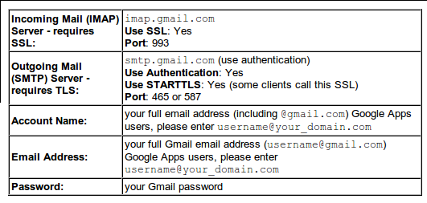
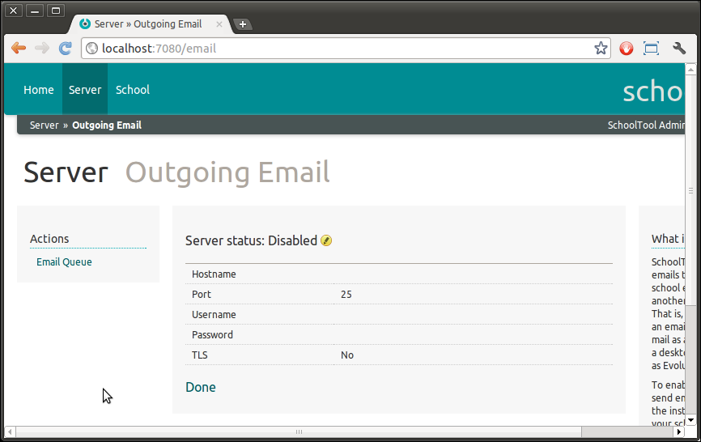
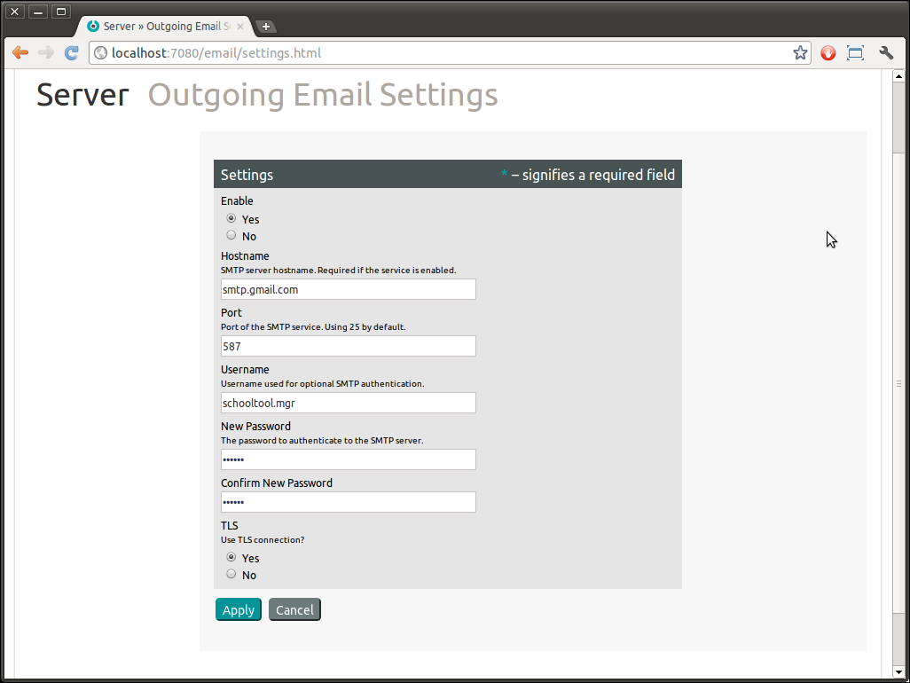
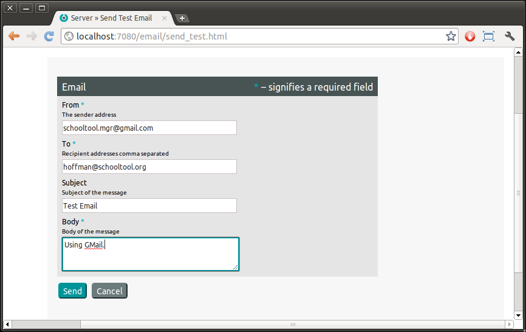
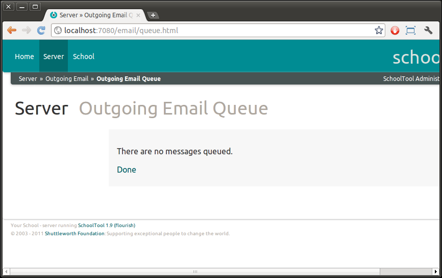
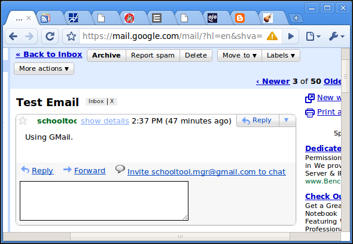
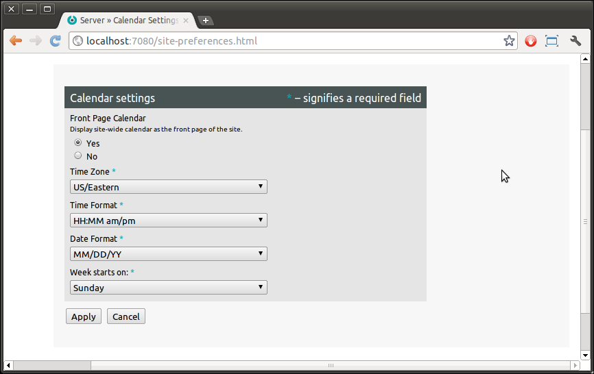

Server Settings¶
Server Information¶
When logged in as a Site Manager, you should see a “Server” tab in the top bar. This takes you to a variety of settings and information relevant to the server itself, as opposed to your school.

In the main content area, the Server Information section provides some technical details you may need for debugging, the Server Information link takes you to a more verbose version of this data.
Outgoing Email¶
SchoolTool can send emails through your school email server or another SMTP server. That is, SchoolTool is not an email server; it sends mail as an email client, like a desktop application such as Evolution or Outlook.
To enable SchoolTool to send emails, you will need the instructions from your school’s server, your ISP, or your webmail provider to configure a mail client to send mail via the provider’s SMTP service.
You can also install and use a free mail server using the Ubuntu package manager, such as postfix or sendmail. Instructions for doing so are outside the scope of this document. Running a mail server requires a knowledgeable systems administrator.
As an example of an external email service, here’s the relevant data for enabling GMail:

To send email through an external mail service, you will need to be logged on as “manager.” Navigate to the Server tab, then click on the Outgoing Email link:

To edit the settings, click the yellow pencil icon next to Server status: Disabled and enter the appropriate data for your server. Note that the username and password in question in this form are the username and password of a user on the mail server, not on SchoolTool.
Note: Outgoing emails from SchoolTool will use this email address, not the email address of a specific user within SchoolTool; e.g., in the example below, all notifications coming from SchoolTool will appear to be from schooltool.mgr@gmail.com.
A TLS connection is a type of secure connection between SchoolTool and the mail server.
As the label suggests, the outgoing email service won’t do anything until you select the Enable – Yes radio button and click Apply. Select Enable – No to turn it off.

Click Apply when you’re done.
To see if it is working, click Send Test Email under Actions in the sidebar and enter some relevant data, including one of your email addresses as recipient so you can make sure the message arrives safely:

After you hit Send, you’ll find yourself on the Email Queue page, and hopefully will tell you that the queue is clear (not that your message is stuck):

Check your mail, and you should see the message:

Calendar¶
SchoolTool is designed to be usable in many different countries, and different parts of the world handle calendars and dates differently, so you may have to change some settings here to suit your local needs. Click on the Calendar link to do so.

SchoolTool’s calendar uses a more or less European configuration by default. I’ve changed it above to suit my American tastes.
Hit Apply to save your new settings.
LDAP Single Sign On¶
If LDAP Single Sign-on plugin is installed, it can be configured from here.